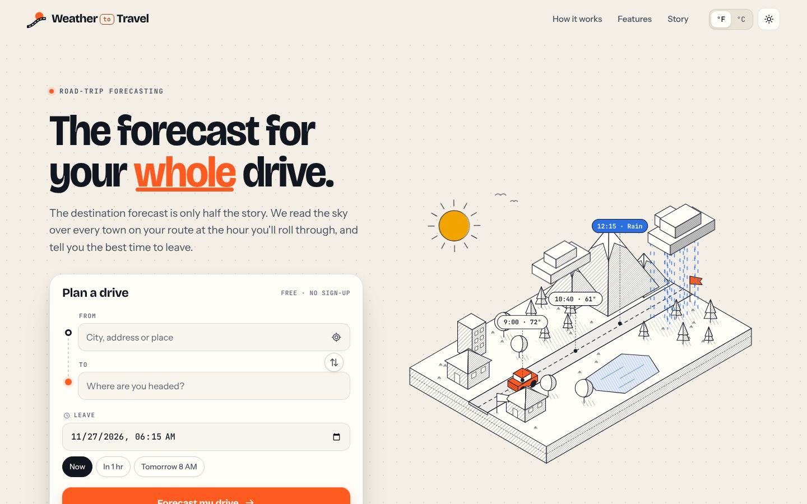
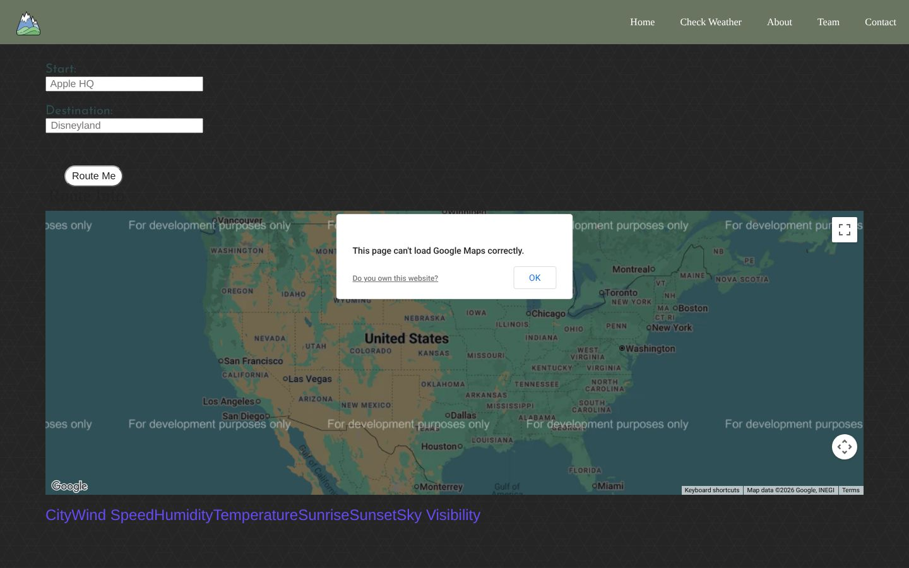
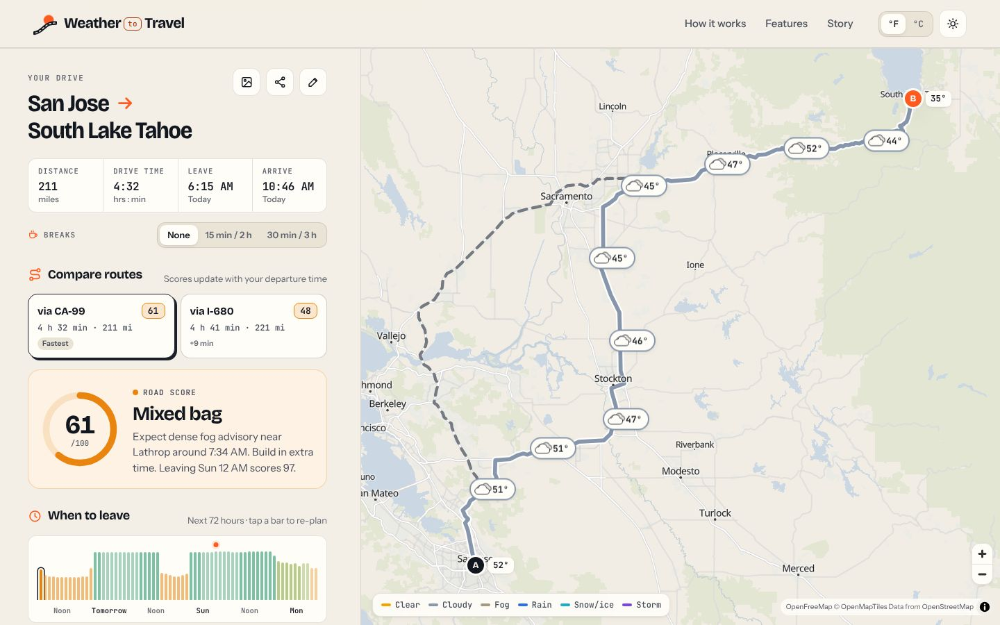
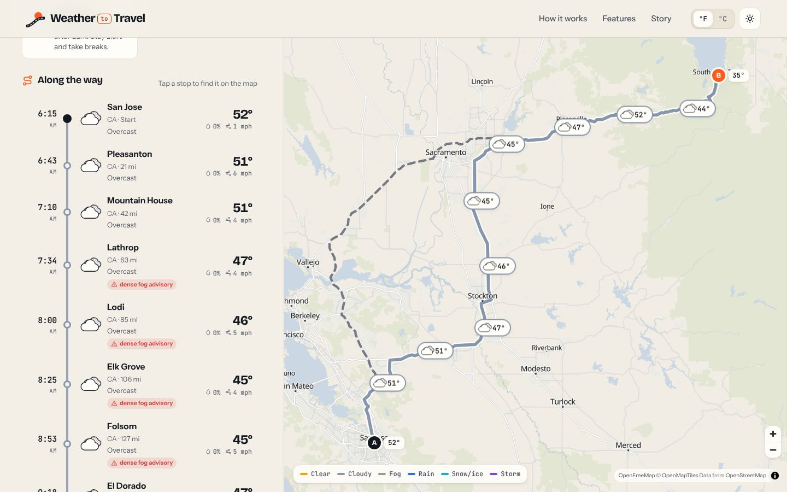
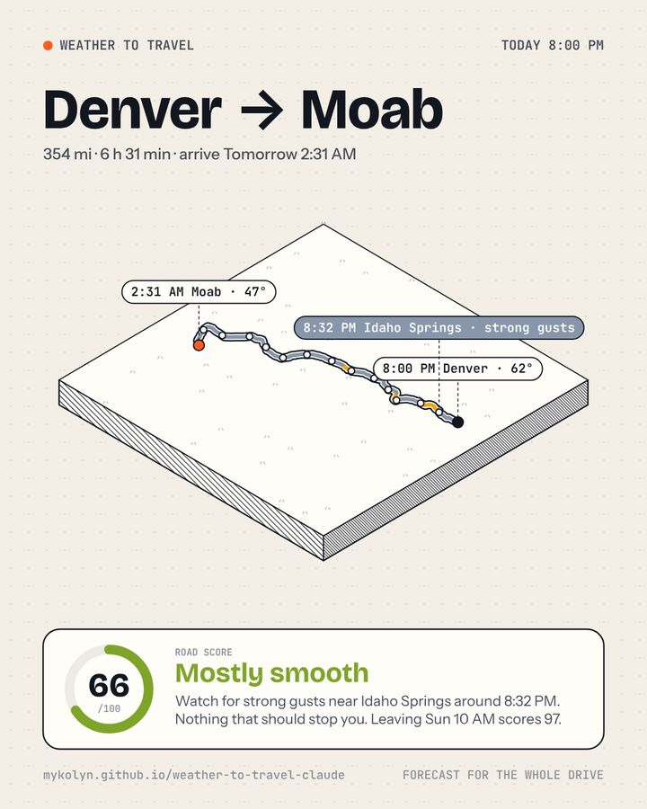
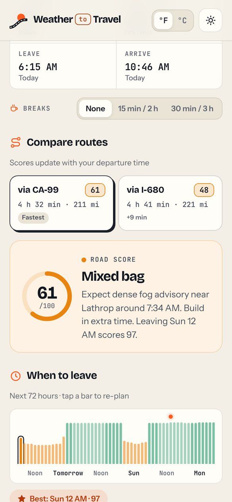

Compare routes
Real alternatives get their own forecast and score, tagged "Fastest" and "Best weather". Nine extra minutes can beat a fog bank.
Case study
Weather to Travel began as a four-person bootcamp app: type two places, see the weather in cities along the route. Years later it no longer worked at all. This is the story of the rebuild: what was broken, the one insight the redesign hangs on, and the decisions behind the design and the code.

01
The original idea was good: weather changes between cities, so a road trip deserves more than the destination's forecast. The execution hadn't aged well. Opening it today, the map refuses to load and the forecast table stays empty.

cors-anywhere.herokuapp.com, a demo proxy that has since been shut down.delay() waited for route data before asking for weather.02
The forecast that matters is the one for where you'll be, at the moment you'll be there.
A driver leaving San Jose at 5 AM doesn't care about Lake Tahoe's weather "today". They care about the fog near Davis at 6:40 and the pass above Placerville at 8:10. Everything in the redesign follows from that reframe:

03
A warm paper ground and near-black ink keep the interface quiet so the weather can be loud. One hi-vis orange marks action and the destination. A weather spectrum (sun, cloud, fog, rain, ice, storm) is used identically on the map, timeline, chart and icons. Every pairing passes WCAG AA in light and dark mode, and an automated audit enforces it.
Stock photos of open roads say "travel" and nothing else. The illustration instead explains the product: one road under three different skies, with forecast tags pinned to the moment the car gets there. It's drawn as technical pen work (ink outlines, crosshatching, colour only as accent) and generated by a small script, so it's precise, light, themeable and stays true to the data. After a plan, the hero's tags update to the user's own trip.


Motion explains state instead of decorating it. The route draws itself from A to B, stops cascade in arrival order, and the score counts up so the number lands. Weather glyphs move the way weather does. Everything respects prefers-reduced-motion.
04
Real alternatives get their own forecast and score, tagged "Fastest" and "Best weather". Nine extra minutes can beat a fog bank.
Long drives aren't non-stop. Breaks shift every ETA, so the forecast lines up with reality.
National Weather Service warnings in force at your ETA weigh into the score and are called out by name.
The timeline marks where you'll lose the light. That matters on mountain roads and around wildlife.
Installable, and any trip you've opened still loads with no signal. That's exactly when you're at a remote gas station.
A swipeable strip of stops, thumb-sized controls, and no sideways scrolling at 390 px.

05
06
Overnight stops for multi-day trips, live road-condition feeds such as chain controls, and a small edge proxy with caching to take load off the free public services as usage grows.
Plan a drive